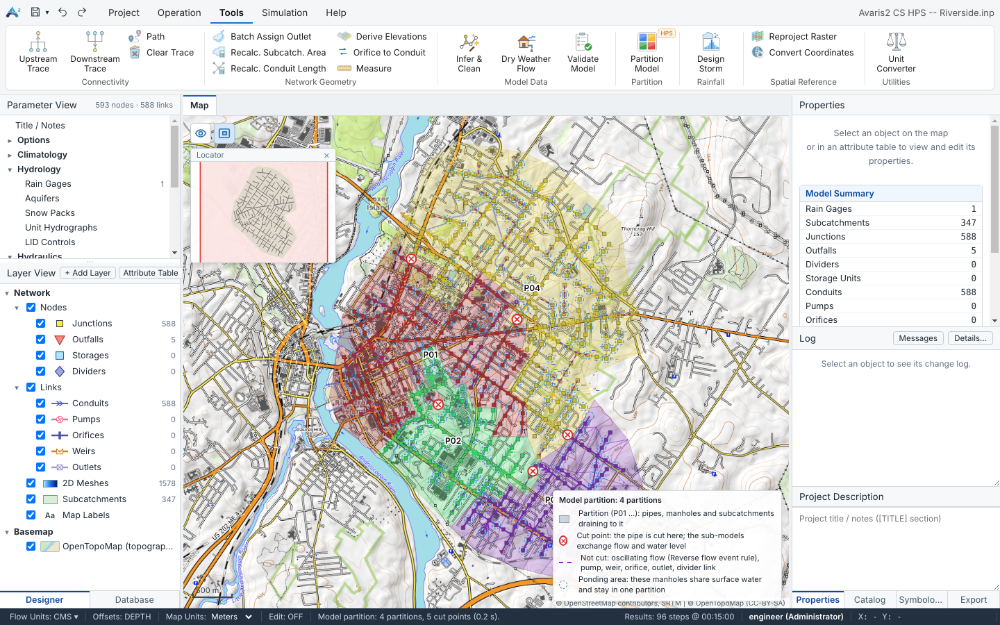
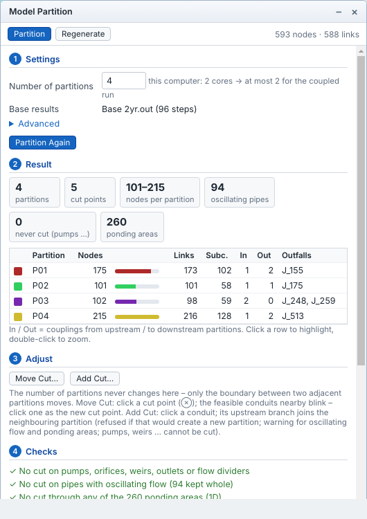
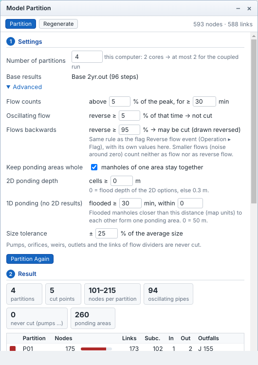
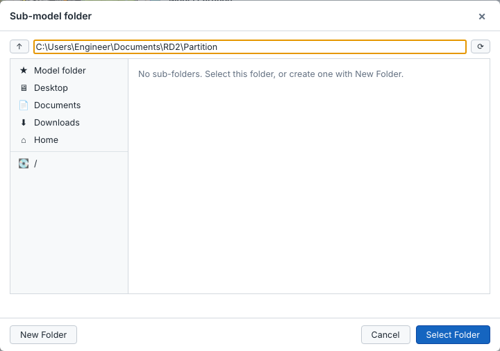

Large models take long to run because one processor core does most of the work. Tools ▸ Partition ▸ Partition Model splits the model into sub-models along the flow, so that the coupled parallel simulation can run them at the same time on several cores. You enter only the number of partitions; the cut points are found automatically. Model partition is part of the HPS (High Performance Simulation) edition.

Riverside split into four partitions. ⊗ marks the five cut points; the legend explains the markings.
How the model is split
One direction of flow per partition. The flow directions come from the base results (the results loaded when you partition). Every partition drains towards its own outfalls or towards one downstream partition; water never flows back and forth across a cut.
Only conduits are cut, and only where it is safe. Pumps, orifices, weirs, outlets and the links of flow dividers are never cut. Pipes with oscillating flow (flow that changes direction during the run) are not cut, and ponding areas – manholes that flood onto the same surface – stay in one partition.
Balanced and few cuts. The partitions get about the same size (within the size tolerance) with as few cut points as possible, because every cut point is exchanged in every iteration of the run.
At a cut point the pipe stays in the upstream partition. In the upstream sub-model its downstream end becomes a boundary outfall; in the downstream sub-model the node receives the pipe's flow. During the coupled run the two sub-models exchange flow and water level at every iteration, so they behave like one model.
Before you start
Save the model. The sub-models are written next to it.
Run the model once (the whole model) and keep these results loaded. Without results the pipe directions as drawn are used and oscillating flow is not checked.
Choose the number of partitions: at most the number of processor cores of the computer that will run the model (the panel shows it), and enough work per partition – roughly at least 100 nodes each. More partitions than cores makes the run slower, not faster.
Partition the model
Click Tools ▸ Partition ▸ Partition Model. The Model Partition panel opens over the map with two tabs, Partition and Regenerate.
In 1 Settings, type the Number of partitions. Base results shows which results are used.
Click Partition. After a moment the map shows the partitions in colour and the 2 Result section shows the counts and one row per partition.
Check 4 Checks. ✓ = fine, ⚠ = warning (for example a ponding area larger than one partition, or more partitions than cores), ✗ = error that must be fixed before generating.
Optionally adjust the boundaries (3 Adjust, below).
In 5 Generate sub-models, choose the folder and click Generate N Sub-models.

The result: 4 partitions, 5 cut points, 101–215 nodes per partition, 94 pipes with oscillating flow kept whole, 260 ponding areas.
Reading the result
Item
Meaning
partitions / cut points
Number of sub-models and of cut pipes.
nodes per partition
Smallest and largest partition. Similar sizes give the best speed.
oscillating pipes
Pipes with oscillating flow in the base results; not cut (purple dashed on the map).
never cut
Pumps, orifices, weirs, outlets and divider links.
ponding areas
Groups of flooded manholes kept together (blue dashed circles).
Table
Per partition: nodes, links, subcatchments, couplings from upstream (In) and to downstream (Out), and outfalls (→ coupled = it drains into another partition). Click a row to highlight it, double-click to zoom.
Map markings and legend
While the panel is open the map shows the partition colours, the cut points (red ⊗), pipes that are not cut (purple dashed) and ponding areas (blue dashed circles), with a legend at the bottom right. These markings are shown whatever the layer visibility. The eye button at the top left of the map (or T) hides and shows them together.
Advanced settings

Setting
Meaning (defaults in brackets)
Flow counts
Flow counts only above this share of the pipe's own peak flow (2 %), and the pipe must carry flow for at least this long (60 min); smaller flows are treated as no flow.
Oscillating flow
A pipe that flows backwards for at least this share of the time with flow (5 %) has oscillating flow and is not cut.
Flows backwards
A pipe that flows backwards at least this share of the time (95 %) simply flows the other way (it is probably drawn reversed); it may be cut and is written turned round.
Keep ponding areas whole
Manholes of one ponding area stay in the same partition.
2D ponding depth
With 1D-2D base results: cells at least this deep form ponding areas (0 = the Flood Depth Threshold, else 0.3 m / 1 ft).
1D ponding
Without 2D results: manholes flooded for at least this long that are closer than the given distance form one ponding area (0 = 50 m).
Size tolerance
How far a partition may differ from the average size (± 25 %). A larger tolerance allows fewer cuts.
The reverse-flow rule is the same rule as the flag Reverse flow event (Flags), with its own values here. Click Partition Again after changing them.
Adjust the boundaries
The number of partitions never changes here; only the boundary between two neighbouring partitions moves.
Move Cut…: click a cut point ⊗; the conduits nearby where the cut may go blink; click one. Only the two partitions next to it change.
Add Cut…: click a conduit; its upstream branch joins the neighbouring partition. It is refused, with the reason, if it would create a new partition or cut a pump, weir or similar; you are warned for oscillating flow and ponding areas.
Press Esc or click Finish when done. The checks update after each change.
Generate the sub-models
Setting
Meaning
Folder
Where the sub-models are written (default: a Partition folder next to the model). Click … to choose or create a folder; it is remembered for this model.
File names
Name pattern of the sub-models, for example Riverside_P01.inp.
Standalone boundaries
Writes the base-run flows and water levels at the cut points into each sub-model, so every sub-model can also be run on its own (useful for checking).
Partition areas
Calculates the surface area of each partition from the DEM (D8 flow directions) and writes it as the sub-model's 2D boundary.

The folder dialog: New Folder creates a folder in the current location.
Avaris2 CS writes the sub-models (.inp with .prj), and <model>.partition.json next to the model, which describes the partition. The Run dialog finds it there.
After the model changes: Regenerate
When you edit the master model after partitioning, the sub-models are out of date and the coupled run is blocked until they are updated. Open Partition Model ▸ Regenerate:
the saved partition is applied to the changed model: existing nodes keep their partition, new nodes join the partition downstream of them (else upstream, else the nearest);
the changes since the last generation are listed, with the sub-models that must be rewritten;
only the changed sub-models are written again. Sub-models that were edited directly are detected, and you are asked before they are overwritten.
If the network changed a lot (new trunk sewers, many new branches), partition again instead.
Coupled parallel simulation
A coupled parallel run starts one engine process per sub-model. All sub-models take the same time step and exchange flow and water level at the cut points in every iteration, so the result is that of the whole model – computed on several processor cores at once. It works for 1D models and for 1D-2D models.
Run it
Partition the model and generate the sub-models (Model partition).
Click Simulation ▸ Run. In the Run section of the dialog choose Coupled parallel. It shows the number of sub-models and cut points, and a speed hint for this computer.
Enter a name and click Run. The progress dialog shows the overall progress; Stop ends all sub-models.
The results of the sub-models are merged into one results file and one report of the whole model, under the run name. Everything works as after a normal run: map, themes, flags, profiles, graphs, report, CSO statistics, 2D analysis and comparison. In the Database the run type is 1D coupled or 1D-2D coupled, and the run summary shows the run time.
1D-2D models
When 2D flooding is enabled and the mesh exists, the coupled run is a 1D-2D run. The mesh is shared out over the sub-models when the run starts (cells inside a partition's area go to it, the others to the partition of their manholes or nearest neighbours), so you do not need to generate the sub-models again after rebuilding the mesh. 2D links that cross a partition boundary are exchanged in every iteration like cut pipes.
Speed
Use at most one sub-model per processor core. With more sub-models than cores the sub-models wait for each other and the run gets slower. The Run dialog and the partition checks warn about this.
Each sub-model needs enough work: with very small sub-models the exchange costs more than it saves. Large models (tens of thousands of objects) gain the most.
Close other heavy programs during the run.
Example on a 2-core computer: Riverside (593 nodes) – whole model 12.9 s, 2 sub-models 8.6 s. Riverside 1D-2D (1,578 cells) – whole model 133 s, 2 sub-models 95 s. Gains grow with the model size and the number of cores.
Accuracy
The sub-models solve the same equations as the whole model and the convergence check is global, so the results match the whole model closely: on the Riverside example the largest difference in max. node depth was 1 cm (2D cells 3 mm), and the continuity error was the same. The remaining differences are of the size you also get from changing the routing step of the whole model slightly. To check a model of your own, run it once as a whole and once coupled, and compare the two runs in the Scenario Comparison – the KPI cards include the run time.
Note:
If the master model was changed after partitioning, the Coupled parallel option is disabled and the dialog says why. Use Regenerate in the partition panel.